FIELD NOTES / NOVEMBER 2026
FOUR DAYS
ON THE STONES.
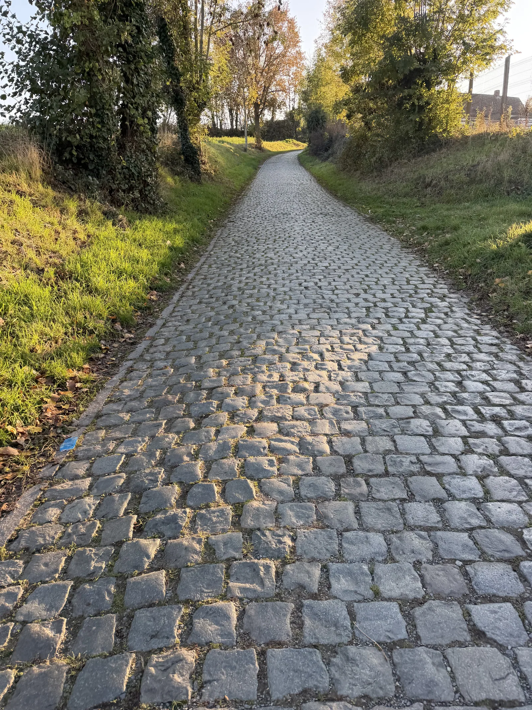
01 — DAYS 1 & 2THE
THE
FLANDERS
STONES.
Familiar climbs, uneven stones, and the last light of November.
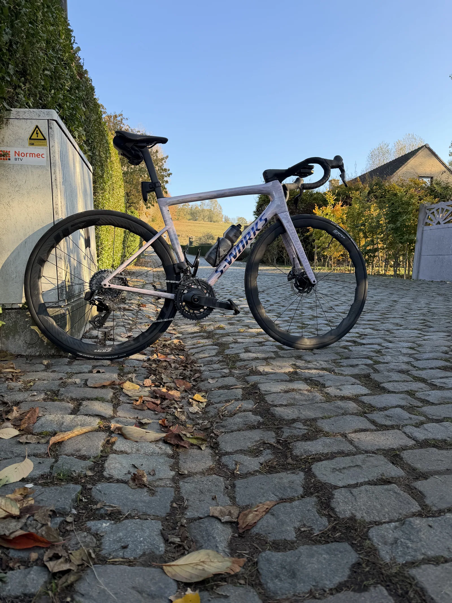
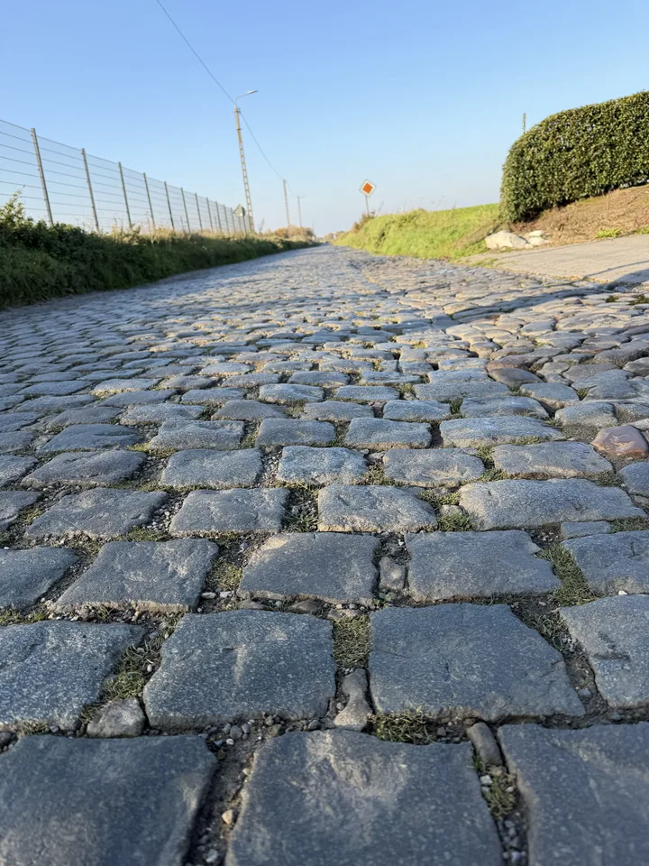
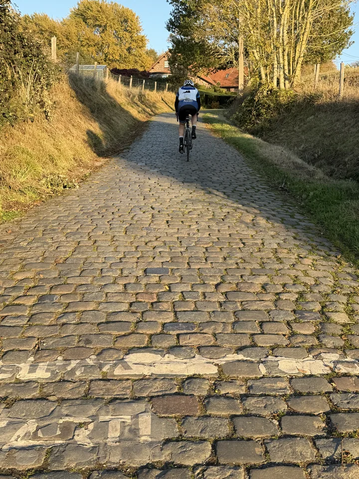
INTERLUDE — OUDENAARDEAFTER
AFTER
DARK.
A walk through Oudenaarde, between two days on the bike.
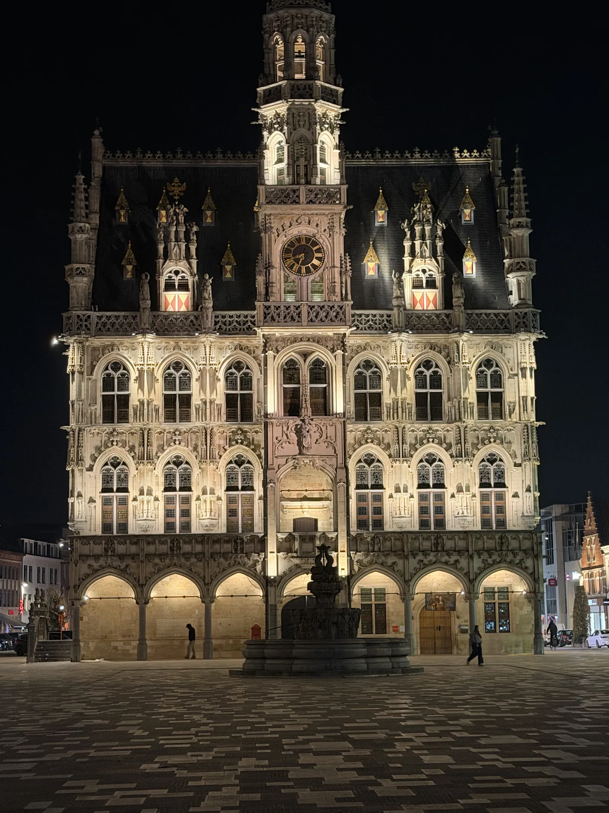
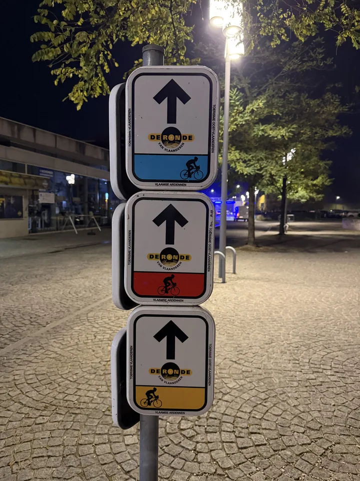
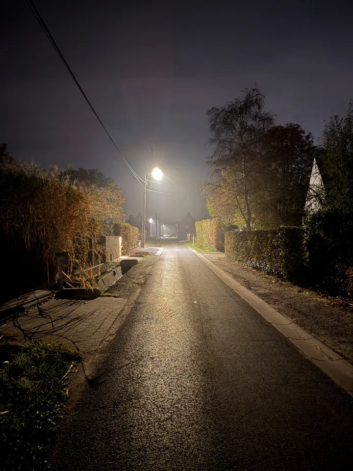
02 — DAY 3THE
THE
NORTH.
Forest, mining country, and cobbles that refuse to run straight.
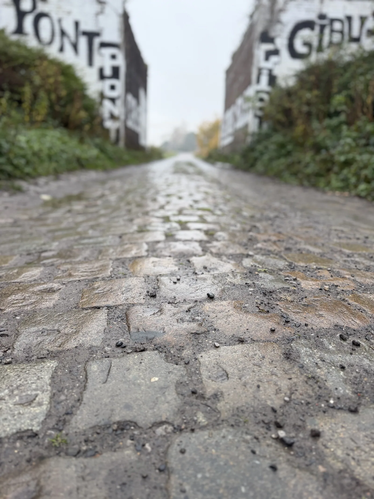
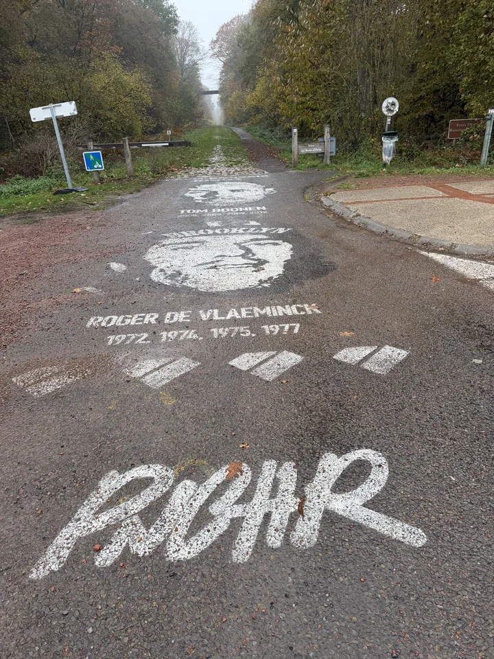
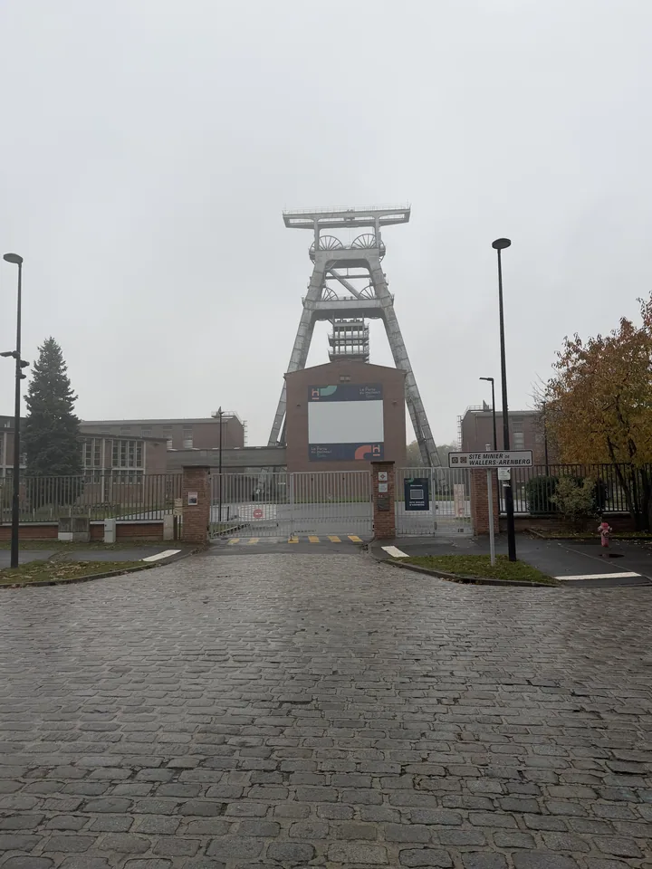
03 — DAY 4 / GERAARDSBERGENTHE
THE
MUUR.
The bells were ringing on the way up. I was tired before the climb began.
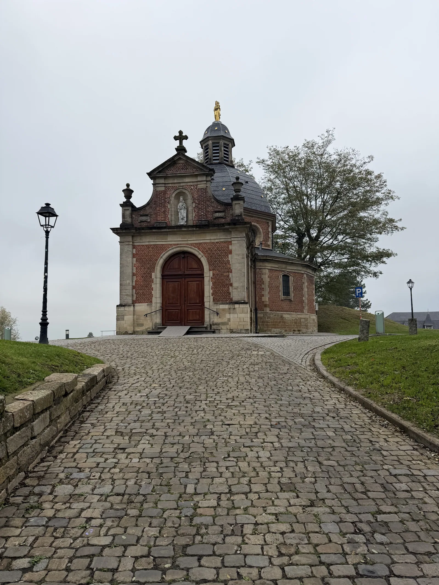
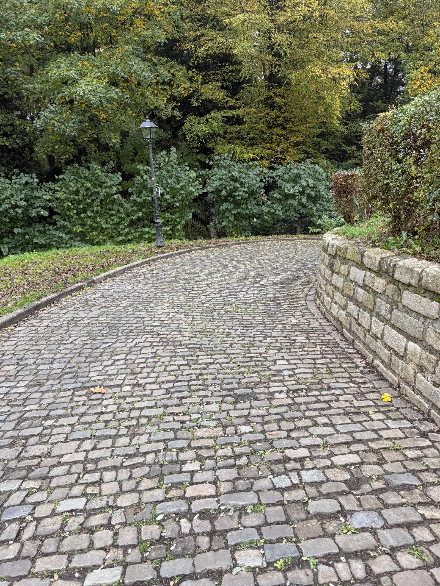
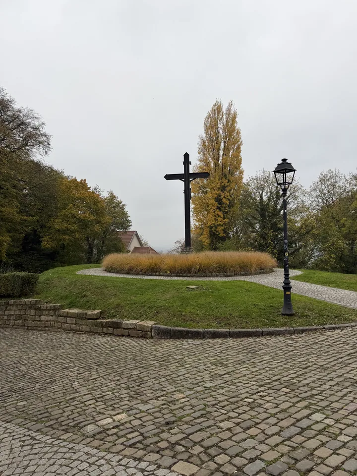
RIDDEN.
NOT STAGED.